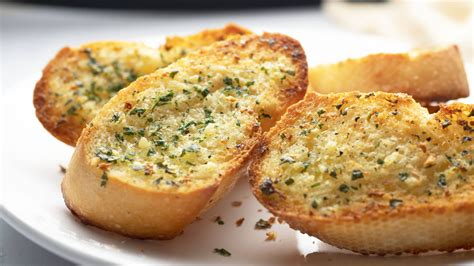

Recipe for Garlic Bread

Desciption
Its bread with garlic and butter. Simple yet delcious way to start you day
Ingredients
- A loaf of bread
- 2 tabble spoon of Butter
- 4 cloves of crushed garlic
- Love
Steps
- Heat the garlic and bread in microwave for 1 minutes
- Toast the bread until golden brown
- Spread the garlic butter on top of the bread
- Enjoy the dish